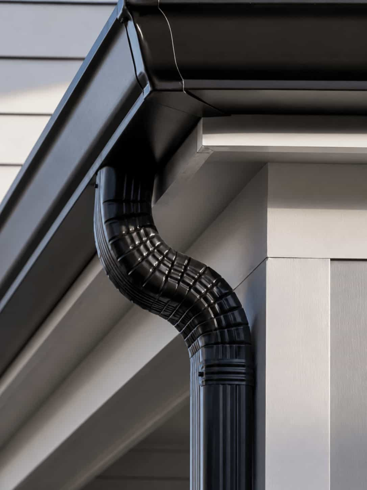

Rain
Rain falls onto the roof and moves toward roofline edges.
Local gutter comparison
Explore gutter cleaning, repair, installation, and guard options from independent local providers.
Our services
From cleaning to installation, homeowners can explore service categories and compare local provider options for different gutter needs.
The water flow path
Gutter projects often connect roofline drainage, downspout placement, water direction, and foundation protection concerns.
Rain falls onto the roof and moves toward roofline edges.
Water runs down roof surfaces into drainage paths.
Gutters collect and channel water along the roofline.
Downspouts help direct water away from the home.
Homeowners can compare providers before issues grow.
Real comparison needs
Leaves, pooling water, roofline shape, downspout direction, and guard options can all affect which provider category may be relevant.


Homeowners compare
The GUTTRO difference
GUTTRO helps homeowners move from vague gutter concerns to a clearer provider comparison path.
Explore providers that may be relevant based on location, category, and project details.
Review whether the request fits cleaning, repair, installation, guard, or drainage categories.
Consider material choices, roofline layout, downspout placement, and guard styles.
Compare details such as availability, timing, terms, quote scope, and homeowner responsibilities.
Independent platform
GUTTRO is built to help homeowners describe their gutter needs, organize service categories, and review quote paths from independent local provider options.
Tell us what you need to compare around your home.
Provider options may be organized by category and project details.
Compare details and choose with more confidence.
Rain-ready comparison
Compare local gutter provider options before the next storm and review service categories, timing, quote details, and availability.
FAQ
GUTTRO helps homeowners organize gutter needs, review service categories, and request provider options from independent companies.
The comparison request path is free for homeowners. Provider terms, quotes, and service details may vary by company and location.
Provider details can vary. Homeowners should review company information and verify license, insurance, terms, and suitability before hiring.
Timing depends on provider availability, the requested service category, location, seasonality, and how much project detail is provided.
No. GUTTRO helps with comparison and quote-path clarity, but homeowners decide whether to contact, compare, or hire any provider.